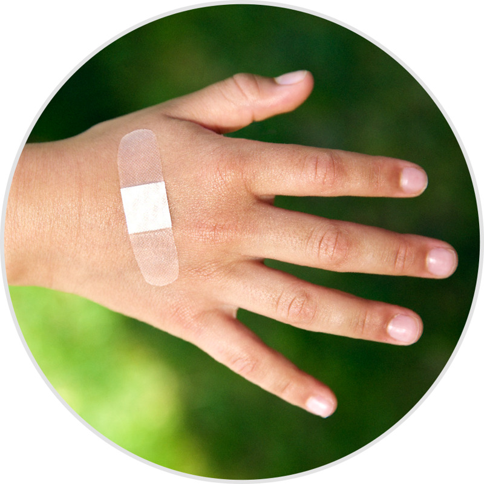

ЖИТТЯ людського організму підтримується численними механізмами. Серед них — здатність загоювати рани і відновлювати пошкоджені тканини. Цей процес запускається відразу після отримання травми.
Поміркуйте. Загоєння відбувається завдяки ряду складних міжклітинних взаємодій.
-
- Тромбоцити прилипають до тканини навколо рани, утворюючи кров’яний згусток, і так закупорюють пошкоджені судини.
- Запалення захищає від інфекцій і усуває «сміття», яке утворилося внаслідок травми.
- Через кілька днів організм починає регенерувати пошкоджену тканину, затягувати рану і відновлювати уражені судини.
- Зрештою, рубцева тканина змінює та ущільнює пошкоджену ділянку.
Беручи за зразок утворення кров’яних згустків, учені почали розробляти пластичні матеріали, які можуть відновлюватися у разі пошкодження. Такі здатні до саморегенерації матеріали містять крихітні паралельні трубочки з двома видами хімічних речовин, які витікають після ушкодження матеріалу. Коли ці речовини змішуються, утворюється гель, що розтікається пошкодженими ділянками і закриває шпарини та дірки. Після затвердіння гелю матеріал стає таким же міцним, як і раніше. Один дослідник визнає, що процес відновлення синтетичних матеріалів, над яким зараз працюють, імітує те, що вже існує в природі.